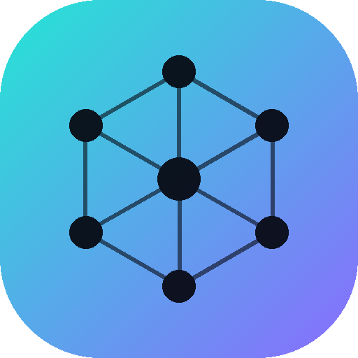

Cortex
Ton second cerveau. Privé, dans ta poche.
Tes notes tout au même endroit
📌
Idées projet appli
Scanner de tickets pour ranger les garanties…
Doc à lire
https://docs…/guide-complet
Recette crêpes de mamie
300g farine, 4 œufs, 60cl lait, 1h de repos…
Code wifi maison
Livebox-3F2A — chiffré 🔒
Importer mes notes sans tout retaper
🟡
Google Keep
🗜️ takeout-keep.zip
✓ 10 notes prêtes à importer
Importer
Keep, texte, Notion, Evernote… tes libellés deviennent des tags.
Parle à tes notes 💬
Quelle est la réf de mon filtre à eau ?
La référence est 1051120 (BRITA Maxtra Pro), d'après ta note « Filtre à eau cuisine ».
📄 Filtre à eau cuisine
Une note à la voix créée par l'IA
🎤
« une note avec le fournisseur Livebox et mon code wifi »
Code Wifi maison
Fournisseur : Livebox
Nom du réseau :
Code wifi :
Listes à cocher courses, tâches…
Lait demi-écrémé
Café en grains
Pâtes complètes
Sac poubelle 30L